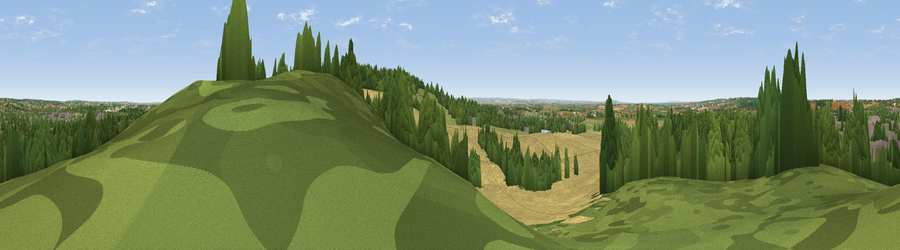

Viewpoint near Basildon
#35287 in England · top 24% of its area beats it · near BasildonWhere it is
The exact computed spot (TQ 67370 87262). Click the marker for map links.
The view, rendered

A 360° render of this exact spot computed from the terrain model, tree cover and land cover — summer colours, afternoon light, calibrated against photographs of famous viewpoints. Real trees, hedges and buildings will differ in detail.
The panorama
Grey silhouette: terrain skyline in each direction (720 bearings, Earth curvature and refraction included). Dashed green: skyline with trees (+15 m) and buildings (+8 m) as obstacles. Blue strip: how far the ground is visible on each bearing.
Where the view opens
Wedge length = distance to the farthest visible ground on that bearing (vegetation-aware). Rings at 10, 25 and 50 km.
What fills the view
59% cropland · 24% woodland · 14% grassland · 2% built-up
Angular shares of the visible panorama (visual magnitude), not map area. Landscape diversity 0.45 (0–1 Shannon).
Key numbers
More beautiful places nearby
The staircase of upgrades: each row has a higher view potential than everything closer. Driving times are estimates from straight-line distance, calibrated against real road routing — check an actual route before setting out.
| Place | Direction | Drive | Score |
|---|---|---|---|
| Viewpoint near Horndon On The Hill | S · 1 km | ~4 min | 51.8 |
| Viewpoint near Vange | E · 4 km | ~10 min | 58.2 |
| Viewpoint near South Benfleet | E · 11 km | ~21 min | 59.8 |
| Viewpoint near Hadleigh | E · 13 km | ~23 min | 61.0 |
| Viewpoint near Birling | S · 25 km | ~40 min | 65.1 |
| Viewpoint near Shipbourne | SSW · 36 km | ~54 min | 66.2 |
| Viewpoint near Charing | SE · 46 km | ~66 min | 68.6 |
| Viewpoint near Westwell | SE · 50 km | ~71 min | 72.2 |
51.55941, 0.41307 · source: osm viewpoint · position refined by local search. Computed location — check access rights before visiting.